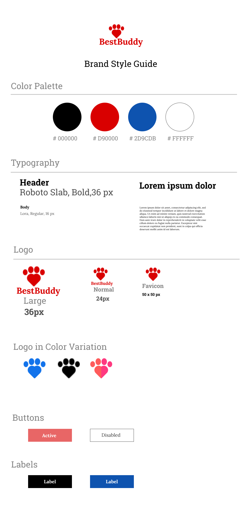

App thats helps connects adopters to find furry friends to adopt.


Application to that offers a new and advanced way to adopt a pet, that helps animal lovers find furry friends to adopt from shelter. It simplifies the adoption process by offering pet profile and breed info.
Millions of animals are currently in shelters and foster homes awaiting adoption. For this project, design an experience that will help connect people looking for a new pet with the right companion for them. There are many healthy dogs at shelters that would make excellent pets and need homes. Meanwhile, people buy thousands of dogs from puppy mills instead of adopting them.
To solve this problem, I created a pet adoption app to connect adopters to find pets which match their lifestyle. Providing basic information of the animal such as breed, age, name as well as a one line description that helps users to understand if it is a potential match or not.
I wanted to understand our users better. I created a survey with specific questions to learn about dog adoption apps and to understand what the audience really needs. what kind of users would be using this service.
the majority of respondents had never used or even heard of a pet adoption/rescue app. But they insisted it was a good idea and could really help with searching for an animal to adopt and the adoption process in general.
92% of respondents look at them online when thinking of adopting.
76% hard time finding a dog online.
96% of participanted would want to see detail information about petss in a dog app.


I performed a competitive analysis of Pet adoption, Pet finder and Pet Harbor. I also conducted an online research to understand the flow and features of other pet adoption applications throughout this analysis. I also did random pet app research to get inspiration for the different services offered for pet owners.
To gather more information and help me understand the type of users i was designing the pet app for, i talked to three of my friends that represent my three different user groups: first-time pet owners and experienced pet owners, so i created three user personas based on my interview with the 3 survey participants. These three different personas both want to look for the best pet that matches with their lifestyle, Yet they have different goals and different frustrations.

Worried that dogs in shelter have health problem.
Wants to interact with a few dogs to guage if they are a right fit for her.
Pet proflles that aren’t accurate, Unhelful customer service.
Create a happy home for a dog while balancing his work.
This exercise was very helpful in identifying the important key features that i needed to build around. I wrote User Stores to reflect the top things users are looking to see and do when opening a pet adoption app, it makes me think much more about what the user want so I broke out some features for each section using the "As a user, I want to… so that I can.
As a returning user, I want to...
I want information about dog breed,photos,age,gender, health and their information
I want to see the adoption process
I also created a user flow to think through a user path to take through different scenarios and tasks and show the flow for a user who wants to adopt a pet. The flow identifies the path a user would take to find a right match and start the adoption process. It also listed all the features that would require to run this app.
By mapping user’s journey and possible decisions, I can design the key pages and necessary steps to follow in order to complete the task with zero error.
Before designing my wireframe, I jumped straight into a quick sketch to map out the user flow. I tried to put in all the features I had in mind. Wireframing is an important phase in my design process. A big challenge here was incorporating all the needed information into a clean-looking design, and I Wanted to keep navigation easy for the users.
Next, i spent some time creating a brand for this app was a fun. I have sketched out some ideas of based on the insights that I got from previous research and brainstorm about the brand image. I want to imply caring and loving meaning through BestBuddy brand logo. In addition, I want to keep it simple and straight forward.
i finalize the brand identify of BestBuddy with a complete style guide. To create a friendly and welcomeing, I chose a warmer color palette. I chose to use red for the logo. The red represents a committed, trustworthy and playful feeling. These are the main characters that I want to emphasize to BestBuddy users.
Designing a website that encourages people to adopt dogs rather than buy from breeders was a project I really enjoyed. I had a lot of fun working on this exercise. As a UX designer, my goal is to make a difference in the world with my designs, and be able to design a website where people can find a dog that matches their lifestyle.